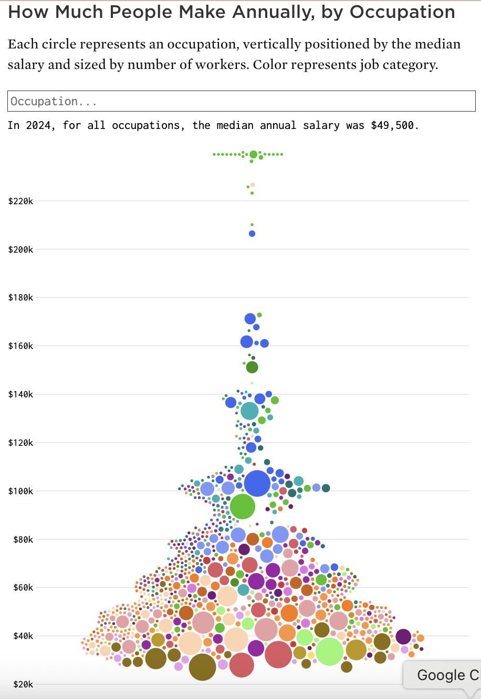

Original visualization · 2024 data
How Much People Make Annually, by Occupation
FlowingData / Nathan Yau · View the original article
The original presents U.S. occupations in one beeswarm. Each circle represents an occupation: vertical position encodes median annual salary, circle area encodes employment, and color identifies one of the major occupational categories. Search and hover support occupation-level inspection.
Analysis of the Original Visualization
Intended message: The visualization shows how median annual salaries vary across U.S. occupations while also communicating employment size and occupational category. It helps viewers notice the overall salary distribution, concentrations of occupations in lower and middle salary ranges, and a smaller number of high-paying outliers.
Audience: The intended audience is a general public audience interested in employment and wages, including students, job seekers, workers, and readers comparing occupations or career paths.
Tasks: Viewers should be able to compare median salaries, identify high- and low-paying occupations, locate salary outliers, estimate which occupations employ more workers, distinguish occupational categories, and search for a specific occupation.
Critique the Visualization
A. Strengths
1. Salary uses an effective quantitative channel: Vertical position represents median annual salary on a common scale, so viewers can quickly identify high- and low-paying occupations.
2. Multiple variables are shown in one view: Each bubble represents an occupation, bubble size shows employment, and color shows occupational category. Hover and search also help users inspect specific occupations.
B. Weaknesses and Opportunities for Improvement
1. Occupational groups are difficult to understand: The beeswarm spreads circles horizontally mainly to avoid overlap rather than to encode another meaningful variable. Occupations from the same major group are mixed throughout the chart and can only be identified by color. With many colors and hundreds of bubbles, it is difficult to see the overall salary pattern of one group or compare one group with another. Grouping occupations spatially by major occupational category would make these patterns much easier to see.
2. Category identification depends too heavily on color. The original uses about 22 colors to distinguish occupational groups. Remembering that many color mappings is difficult, and similar hues are hard to trace through one mixed cloud. This weakens group comparison and also creates an accessibility issue because color carries essential meaning. The redesign gives each group a labeled x-axis region and uses a calmer color treatment, so position and text—not color alone—identify categories.
3. Dense areas are difficult to read: Hundreds of occupations cluster in the lower and middle salary ranges, making individual circles and category-level patterns difficult to separate. This makes it harder to compare groups or inspect occupations in dense regions. Giving each occupational group its own horizontal region and using collision-aware beeswarm placement can reduce overlap while preserving salary position.
4. Bubble area supports only approximate employment comparison. Circle area is less precise than position or length for quantitative comparison, so exact differences in employment are difficult to judge visually. Keeping area as a secondary magnitude encoding is reasonable, but a size legend and exact values in the tooltip make the encoding easier to interpret.
